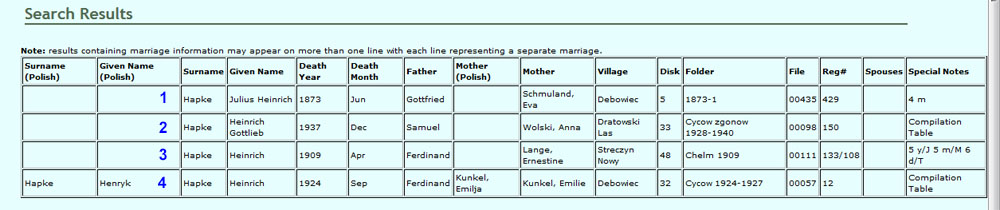
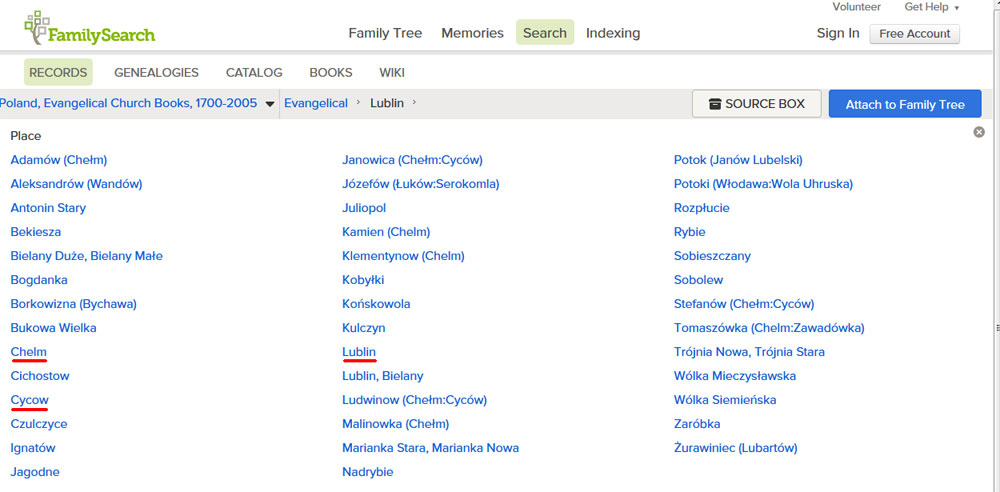
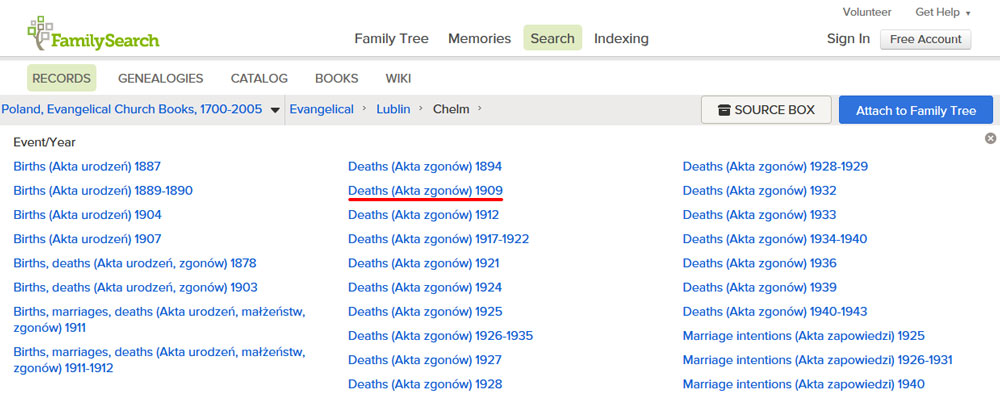
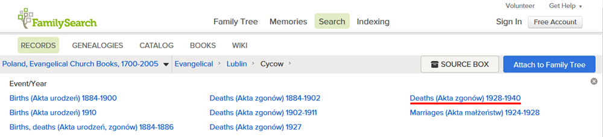

This page describes how you can locate records of interest in the FamilySearch Lublin Library. The array of folders presented on that FamilySearch page provides few clues about where to find a particular record you may be interested in. The SGGEE Lublin Database Search Utility available at the top Lublin Digital Archive page provides the links to search Births, Deaths, and Marriages in this digital archive.
To draw parallels between how this project at SGGEE and FamilySearch have been implemented it is first necessary to define the terminology used in this page describing information coming from both sources.
| SGGEE Term | FamilySearch (FS) Term | Definition |
| Digital Archive | Library | Collection of all records contained on the original disks/DVDs. For FamilySearch those records accessible online constitute the Library. |
| Disk | (not used) | The disk/DVD that a record was found on. |
| Folder | Image Folder | SGGEE - the folder on the disk/DVD containing a record FS - the folder link where a collection of records is found |
| File | Image | SGGEE - the file corresponding to the record (00nnn) FS - the image in the folder corresponding to the record (1 - nnn) |
| Reg# | (not used) | Only necessary for files/images with more than one record. Usually encountered with Napoleonic records, tables, and some Attest pages. |
| Search Results | (not used) | When using the SGGEE Lublin Search Utility, results are presented as a table with the corresponding hits. The coordinates of that search defined by Disk/Folder/File/Reg# are unique to each record and are used to locate the corresponding image (if available) in the FamilySearch online Library. |
The top page of the FamilySearch Lublin Library shows a listing of links to different folders named according to many towns or cities in the Lubelskie province. These folders will be referred to here as Town Folders. They do not contain images in themselves but their subfolders, which we call Image Folders, contain the images of the library. The name of the Town Folders indicates the town specified in the Folder field of the SGGEE database Search Results. The names of the Image Folders within each Town Folder indicate the events (Births, Deaths, Marriages, etc) and the range of years presented by the images contained therein.
An important point to keep in mind when searching the FamilySearch Library is that they will not publish birth records more recent than 100 years. This is to provide confidentiality to people who may still be alive. When the SGGEE Lublin database was developed a 90 year cut-off was used. Generally births starting as early as 1920 to 1926, depending on when different records were extracted, indicate the given name of the child as "Living" to protect their identity. The SGGEE database, however, includes all these records where the names of the parents, the approximate date of birth, and birth location are given. Therefore the SGGEE database is much more extensive in the records covered so many records identified in the Search Results will not be available in the FamilySearch Library. The latest birth records in FamilySearch appear to reach as far as 1913. Any book or collection of records from Lublin that included the term births or in Polish "Urodzeńia" that was later than 1913 appears to not be represented online. Often these books may have held both births and deaths but because the birth term was present in its description, all records of that book (corresponding to a single folder in the digital archive) are omitted from the library.
Furthermore, many alegata are present in the Lublin digital archive. Alegata were indicated by the year of the marriages and since the most common record found in alegata are birth certifications, the term births was included in the collections of alegata. For marriages occurring after 1913 these alegata are sadly missing from the FamilySearch Library despite the fact that most births were well before that year. Please keep these principles in mind when you search for records at FamilySearch as they will likely account for cases where you can't find a record of interest, even if the event was not a birth. In the SGGEE database, if a record was found as part of Alegata it will be indicated in the right-most column of the search results.
This exercise will introduce you to a number of facets you will likely encounter when, after identifing records using the SGGEE Lublin Database search utility, you wish to locate and view images of the records at FamilySearch. For this exercise we will search for deaths for individuals with the last name Hapke and given name Heinrich. The image below shows the results of this search (using the version of database that was last updated in 2013).

Four different hits were obtained with none of these being duplicate records. For convenience sake they are labelled in blue as cases 1-4. Now let's search for each of these records in FamilySearch. When you go to the top page of the FamilySearch Lublin Library you will see the page below presented to you. Go ahead - don't be timid. Click the hyperlink just provided and it will open the library in another window or tab so you can toggle between looking at this page and being at FamilySearch simultaneously. This will give you hands-on experience as you learn to browse the FamilySearch Library.

This page represents a listing of what we call Town Folders. When you look at the Search Results above the folder field indicates a town for the origin of each record. Cases 2 and 4 have records associated with Cycow. Case 3 is associated with Chelm. Case 1 only indicates a year but no town. When only a year is shown for the folder then Lublin is the town to associate with that record. The next database update will incorporate this change to remove any confusion. From this set of 4 records we realize the town folders that we should pay attention to are Lublin, Cycow, and Chelm. Hence, each of these Town Folders is highlighted with a red underline in the figure above. Note that the town indicated in the Folder field often does not correlate with the town where the event occured as indicated by the Village field. For this reason many records in the FamilySearch site will be difficult to find without the use of the SGGEE database search utility as the Town Folders usually bear little reference with where the different events occurred. Our SGGEE database search utility is essential to find your records of interest and predict where to find them in this online library.
Let's first look for the record represented in Case 3. The folder is indicated as Chelm 1909. When you click on the link for Town Folder "Chelm" you now are presented with a collection of Image Folders as seen below:

Case 3 has a record with the year 1909 indicated in the Folder field so you should look for the image folder that has that year or range of years. The folder should also be described as having Deaths. Such a folder does exist and has been underlined in red.
Assuming that you are following this example in a separate window/tab of your browser click on that Image Folder link "Deaths (Akta Zgonow) 1909". That brings you to the first image of that folder showing a description the church staff provided indicating what is contained in this book or collection of records. That description determines how this folder was named. In the upper left corner of the image panel FamilySearch provides an indicator showing what image you are on and how many images are present in this folder. You can either scroll through the folder using the arrows or since our Search Results indicate the record we want to see is in File 00111 just enter 111 into the image indicator field and hit Enter. If you have done this correctly you will be brought immediately to the record referenced in the Search Results. This type of record is an Attest described in our affiliated Lublin pages under "Record Types". Since only one record is on the image the registration number is of little use since it is not required to identify the record.
Now let's tackle Case 1. You can get back to the top page of the Lublin Library by clicking above the image on the link for "Lublin" where you see the path "Evangelical > Lublin > ... " bringing us back to the list of Town Folders. Case 1 is associated with Lublin so click on the Lublin folder link. This provides a very long list of Image Folders not surprisingly since we expect the main church of the region to have the most records. The Folder field for Case 1 indicates the year to search for is 1873. Further down on the left column is a link labelled "Births, deaths (Akta urodzeń, zgonów) 1873". Here the first image shows the cover of a book of records written in Cyrillic but the year is clearly understandable by anyone. The File associated with this record is 00435 so type 435 into the image indicator and hit enter. In this example we see records 433-435 but the record we want is Reg# 429. Just hit the left or backwards image arrow twice and you will be brought to the record we are looking for. Even if you can't read Cyrillic you know which record you want and you can copy or print it to have someone else translate it for you. Of course the database already provides most of the important information by including parents and spouses if pertinent, approximate date, and location of the event. Other data you may want that is not not included in the database are witnesses, godparents, and exact day of the event. This example shows that the file number from the SGGEE database does not always correlate with the image number of the library, but it should get you in the right ball park where scrolling in either direction will shortly get you to the right record.
To complete this exercise we have two more to find, both associated with the town Cycow. Go back to the Town Folders page by clicking above the image on the link for "Lublin" where you see the path "Evangelical > Lublin > ... " and then click on folder "Cycow". That will bring up the list of Image Folders shown below:

Let's next look for the record represented in Case 2. The folder is indicated as "Cycow zgonow 1928-1940". Zgonów is Polish for Deaths. As we would not expect births to be present in this folder, and these records are after 1913, it is fortunate that these death records were placed in the online library. The folder with red underline matches with the type of data we expect in the folder - Deaths with the range of years 1928-1940. Also note in the search results for Case 2 that the right-most column indicates this record is in a table. Click on the link indicated for this Image Folder and Image 1 then shows the cover of a book plus the notes the church staff made describing what is in this book. Notice that only deaths are indicated and not births accounting for why we see images from this book that is more recent than 1913.
The record we are interested in is on file 00098 so type 98 into the image indicator and hit enter. This brings us to a page of the table but now we seem lost. The right page shows records 51-60 when we really want #150. Looking at the records shown we have no indication what year this is. Probably the best thing to do is scroll forward until we reach #150 and hope it is the right year. To save you the inconvenience of scrolling multiple pages just go to Image 103. On the right side of the resulting image you will see the record we are after. Fortuitously in this example it was the last death of 1937. The start of a new year is shown for the next record. For tables you often have this ambiguity in what year you are looking at until you get to the transition of the next year. From this point we know continuing to the right will bring us into 1938 while 1937 is to the left until we reach 1936, etc.
Case 2 above brings up a point worth noting. The File number from the database and the Image Number are separated by an appreciable distance. Two reasons can account for this. The digital archive includes supplementary pages providing additional information of someone represented on those records. They normally switched to a different ordering scheme for these supplemental pages using the system 00068a, 68b, ..., 68e. In contrast, FamilySearch continued to number the files sequentially thus causing this deviation. A second but rarer instance is that an Image Folder may have records originating from two Folders of the digital archive. Thus the second folder will begin after the last image of the first folder. The FamilySearch Lookup Table already accounts for these dual start points but of course the correlation of File number and Image Number will require a correction for records in that second folder.
Just one more record left to find. Case 4 is found in Folder Cycow 1924-1927. When we look at the Image Folders for Cycow there is no folder indicated with that range of years. This means that group of records is not included in the FamilySearch Library. To investigate why they would omit this folder we can view our Disk Descriptions file. If you look up Disk 32, Folder Cycow 1924-1927 you will see that this folder has tables that include births and deaths. The inclusion of births after 1913 prevented this folder from being accessible in the FamilySearch Library. Despite the fact that death tables are also listed, the entire folder has been avoided.
This exercise introduced you to how to find records identified from the SGGEE Lublin Database search utility and also showed you what hurdles you may experience in the process. If you encounter any problems or have suggestions to improve this instructional page please contact webmaster@sggee.org. We cannot change anything on the end of FamilySearch but hope that our tools have made your searching of this library much easier.
The FamilySearch Look-up Table can be used to quickly get you to the appropriate Image Folder.